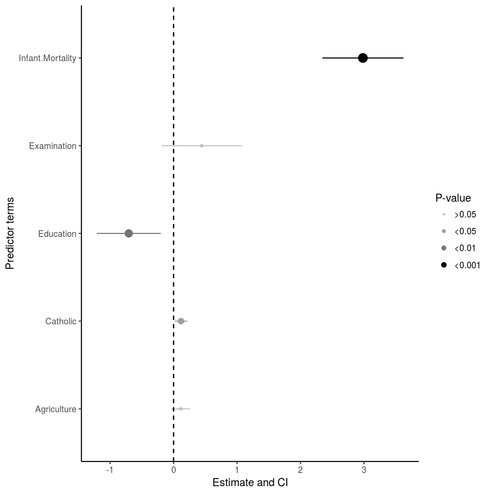

In most cases, showing a figure of some results is more impactful than showing a table. Often times in epidemiology, results from analyses are put into a table. This is less then ideal for busy researchers, as it takes longer to process and understand the results from a table than it is from a figure. So
library(broom)
fit <- lm(Fertility ~ 0 + Catholic + Agriculture + Examination + Education + Infant.Mortality, data = swiss)
fit <- tidy(fit, conf.int = TRUE)view_estci(fit)
If you want more fine-grained control, you can use the geom_estci layer directly.
ggplot(fit, aes(x = estimate, y = term, xmin = conf.low, xmax = conf.high)) +
geom_estci()There is a utility function discrete_pvalue to convert a numeric p-value into a factor, which makes it easier to visualize the results. So:
fit2 <- transform(fit, p.value = discrete_pvalue(fit$p.value))
p <- ggplot(fit2, aes(x = estimate, y = term, xmin = conf.low, xmax = conf.high,
alpha = p.value, size = p.value))
p + geom_estci(fatten = 1, center.linetype = "dotted")We can add ends to the error bars too.
p + geom_estci(fatten = 1, center.linetype = "dotted", height = 0.5, linetype = "dashed")All of the power of ggplot2 is available to customize the geom_estci layer. Check out the documentation for the geom_estci function as well as the ggplot2 layers e.g. geom_pointrange or geom_point for full customization. Since this is a ggplot2 object, you can add to it all you want, like using facet_grids.
There are a few packages that have similar functionality as the e.g. geom_estci, but each has its own specific use cases:
In both of these packages, they assume you’ll plot directly from the lm or other regression function, so they do a lot of internal data wrangling and managing. The ggepi package is as hands off as possible when it comes to your data you plan to plot, so all of the work in getting the data ready for the figure must be done before hand. This package assumes what you want to plot is what you want to plot, nothing more. There are trade offs to both ways of doing things! Try the different packages out yourself and find out what works for you!